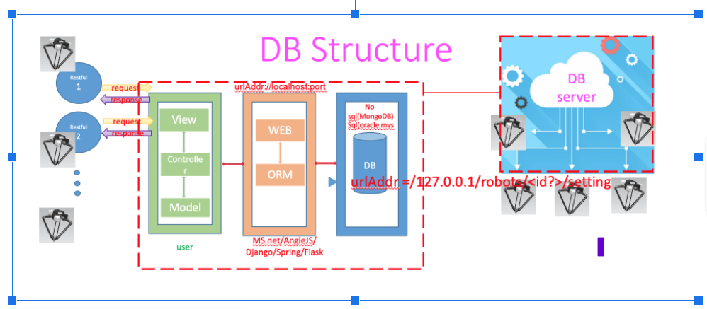

MongoDB MVC結構與初始化和設定!
MongoDB MVC架構圖

MongoDB MVC架構圖中Model的有關mongoDB檔案

WPF MongoPickDB_Model(Table一，抓取紀錄)：
相關細節請參考程式碼
https://github.com/gilbert-sun/Recycle_1.7/blob/master/Models/MongoPickDBmodel.cs
https://gilbert-sun.github.io/api/Recycle.Services.RobotPickMongoServices.html
WPF MongoLogDB_Model(Table二，錯誤紀錄)：
相關細節請參考程式碼
https://github.com/gilbert-sun/Recycle_1.7/blob/master/Models/MongoLogDBmodel.cs
https://gilbert-sun.github.io/api/Recycle.Services.RobotLogMongoServices.html
MongoDB MVC架構圖中Service (Controller) 的有關mongoDB檔案
初始化有兩個檔案, 分別對應Table一(RobotPickMongoServices.cs)和Table二(RobotLogMongoServices.cs)
Table一和Table二 初始化 設定欄位
*. [X] Table一 name = [robot1db]
*. [X] Table二 name = [robot1logdb4]
*. [X] IP = [127.0.0.1]
*. [X] Port = [27017]
Table一 初始化設定
Table二 初始化設定

Table一和Table二 宣告初始化
https://gilbert-sun.github.io/api/Recycle.ViewModels.RobotViewModel.html

在ViewModels目錄裡的RobotViewModel.cs line 70-73
https://github.com/gilbert-sun/Recycle_1.7/blob/master/ViewModels/RobotViewModel.cs